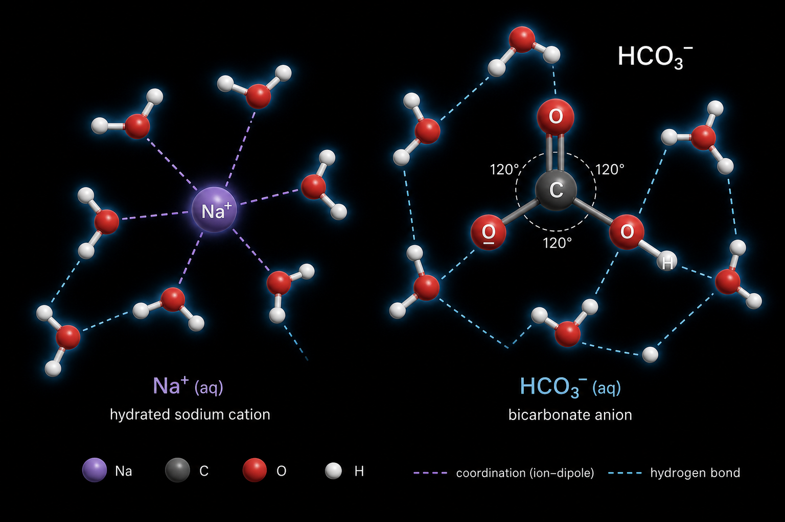
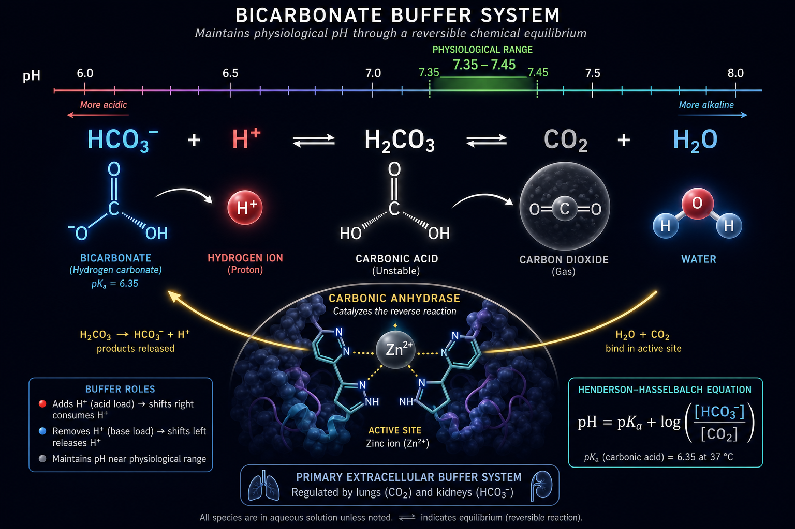
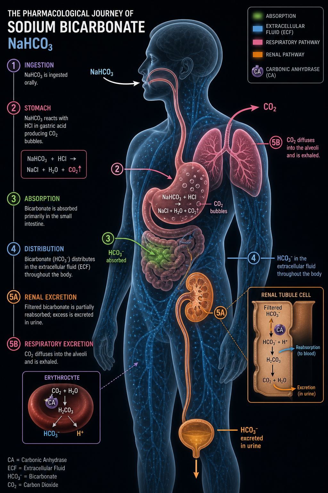
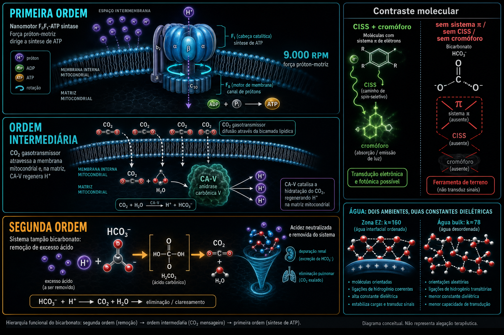

Ficha · molécula
SEGUNDA ORDEM — TAMPÃO TERMODINÂMICOBicarbonato de Sódio
NaHCO₃
A bula vê um antiácido que espanta a azia. A Pharmacopeia lê um tampão termodinâmico bottom-up que preserva o pH mitocondrial para que ferramentas de primeira ordem possam operar.
Tese Pública
O bicarbonato de sódio tem 50 milhões de anos. Formou-se nos lagos alcalinos do Colorado e do Rift Valley antes de existir farmácia, patente ou regulação. É o tampão que a vida multicelular escolheu para preservar o gradiente de protões da ATP-sintase — o nanomotor mais rápido da biologia (9.000 RPM). A indústria farmacêutica não patenteia moléculas de 50 milhões de anos. Em vez disso, substituiu-as por IBPs que geram biliões em receitas anuais — e que silenciosamente comprometem a digestão, a absorção de B12 e a microbiota. O bicarbonato não é um remédio: é uma ferramenta de soberania fisiológica. Mantém as condições de base para que luz, água, campo magnético e melanina — as ferramentas de primeira ordem — possam operar.
Guardrail
Risco de alcalose metabólica iatrogénica. Sobrecarga de sódio (273 mg Na⁺/g) — contraindicado em hipertensão não controlada, ICC descompensada, cirrose com ascite.
- Hipocalemia funcional por alcalose
- Hipocalcemia funcional (tetania, sinal de Trousseau/Chvostek)
- Contraindicação absoluta em alcalose respiratória preexistente
- Uso IV exclusivamente hospitalar com monitorização gasométrica
- Reduz absorção de tetraciclinas, fluoroquinolonas, azólicos e ferro oral
- Aumenta excreção de lítio e salicilatos; reduz excreção de anfetaminas
Molécula
Sal inorgânico NaHCO₃, PM 84,01. Geometria planar trigonal. Sem sistema π, sem cromóforo, sem CISS, sem quiralidade. A estrutura mais simples da farmacopeia.
Tampão
Sistema CO₂/HCO₃⁻ é o principal tampão do sangue. pKa₁ 6,35. Rácio HCO₃⁻/CO₂ ~20:1 em pH 7,4. Duplo controlo: rim (HCO₃⁻) e pulmão (CO₂).
Mitocôndria
Restaura a força motriz protónica (pmf = ΔΨ + ΔpH). CO₂ como gasotransmissor: difunde para a mitocôndria, onde CA-V regenera H⁺ para a ATP-sintase a 9.000 RPM.
Água EZ
Ânion kosmotrópico que organiza a água. Preserva a zona de exclusão (EZ, k≈160) ao tamponar H⁺. Ambiente dielétrico necessário para CISS e ATP-sintase.
BigHarma
Domínio público total desde 1861. Substituído por IBPs patenteáveis (omeprazol, 1988). Ranitidina retirada em 2020 por contaminação por NDMA. Bicarbonato: R$3 o pacote, sem recall.
Geografia
Máximo em zonas de campo fraco (Anomalia do Atlântico Sul) e latitudes altas (inverno). Compensa acidose secundária à deficiência de luz e campo magnético.
Biofísica
O bicarbonato de sódio é uma ferramenta de segunda ordem: não transduz energia do ambiente, mas remove o obstáculo ácido que bloqueia os sistemas de primeira ordem.
Classificação
SEGUNDA ORDEM. Tampão termodinâmico bottom-up. Remove excesso de H⁺ que contrai a EZ water, reduz a pmf e bloqueia a ATP-sintase.
ordem IIArquitectura
HCO₃⁻ planar trigonal (C₂ᵥ). Sem sistema π aromático. Sem cromóforo UV/Vis. Antena vibracional IR (~1630 cm⁻¹). Dipolo permanente em solução.
aquiralMecanismo Primário
HCO₃⁻ + H⁺ ⇌ H₂CO₃ ⇌ CO₂ + H₂O. Tampão extracelular primário. CO₂ como gasotransmissor permeável a membranas lipídicas.
pKa 6,35Interface Enzimática
Anidrase carbónica (CA I/II/IV/V). Catalisa CO₂ + H₂O ⇌ HCO₃⁻ + H⁺ em milissegundos. CA VA/VB mitocondrial alimenta o gradiente de protões.
CAATP-sintase
Modulador indireto da pmf. Restaura ΔΨ e ΔpH em acidose. CO₂ → CA mitocondrial → H⁺ na matriz → alimenta o nanomotor a 9.000 RPM.
pmfÁgua EZ
Ânion kosmotrópico. Protege a zona de exclusão (k≈160) ao remover H⁺. Ambiente dielétrico necessário para CISS, melanina e ATP-sintase.
k≈160POMC / Melanina
Efeito indireto permissivo. pH melanossomal (4,5–5,5) regula tirosinase. Bicarbonato estabiliza o pH sistémico para a cascata melanocortina operar.
indirectoCISS
Sem CISS direto (HCO₃⁻ é aquiral e sem sistema π). Preserva as condições dielétricas (k≈160) para o CISS dos biopolímeros quirais operar.
suporteBioquímica Clássica
Farmacologia, fisiologia e mecanismos conforme a literatura convencional.
Farmacocinética
- Absorção
- Oral: dissociação imediata no TGI. Reação com HCl gástrico produz CO₂ (eructação). HCO₃⁻ não neutralizado absorvido no duodeno. Pico plasmático em 30–60 min.
- Distribuição
- Primariamente no líquido extracelular (LEC, ~14 L em adulto 70 kg). Penetração intracelular limitada para HCO₃⁻; CO₂ difunde livremente.
- Metabolização
- Não sofre metabolismo hepático de fase I/II. A "biotransformação" é puramente físico-química: dissociação iónica, tamponamento, reação com H⁺.
- Excreção
- Dupla via: renal (HCO₃⁻ filtrado, reabsorvido ou excretado; limiar ~24–26 mEq/L) e respiratória (CO₂ exalado; resposta em segundos).
Farmacodinâmica
- Tampão plasmático
- Sistema CO₂/HCO₃⁻ (Henderson-Hasselbalch: pH = 6,1 + log([HCO₃⁻] / 0,0307×PaCO₂)). Valores normais: pH 7,40 | HCO₃⁻ 24 mEq/L | PaCO₂ 40 mmHg.
- Anidrase carbónica
- CA I/II eritrocitária, CA II/IV renal, CA VA/VB mitocondrial. Inibidores (acetazolamida) produzem acidose metabólica — mecanismo inverso.
- Efeito Bohr
- Alcalinização reduz liberação periférica de O₂ (curva Hb-O₂ desloca à esquerda). Relevante em acidose grave tratada agressivamente.
- Indicações clássicas
- Acidose metabólica grave (IV), DRC (oral), intoxicação por salicilatos/ADT, alcalinização urinária (nefrolitíase, MTX), tampão de hemodiálise.
Figuras
Arquitectura molecular, mecanismo, farmacologia e interface biofísica

A molécula mais simples da farmacopeia. Um sal inorgânico sem anéis aromáticos, sem sistema π, sem cromóforo UV/Vis — que preserva o gradiente de pH da ATP-sintase.

O tampão que a vida escolheu. Sistema CO₂/HCO₃⁻: rim controla o HCO₃⁻, pulmão controla o CO₂. Dois órgãos, um tampão, milhões de anos de evolução.

Absorvido no intestino delgado em 30–60 min, distribuído no LEC. Excretado por duas vias: rim (HCO₃⁻) em horas, pulmão (CO₂) em segundos.

Não acende o motor — preserva o gradiente que o faz girar. Ferramenta de segunda ordem: remove o obstáculo ácido para que luz, água e campo magnético operem.
Evidência
Navegação editorial pela qualidade e maturidade da evidência.
Acidose metabólica grave (IV)
Primeira linha em acidose metabólica não-lática. Corrige déficit de HCO₃⁻ com mecanismo racional e bem documentado. Consenso clínico robusto.
Intoxicação por salicilatos / ADT
Aprisionamento iónico (salicilatos) e reversão de bloqueio de canal de Na⁺ (ADT). Indicações bem estabelecidas em toxicologia de emergência.
DRC com acidose metabólica
Suplementação oral (1–3 g/dia) demonstrou retardar progressão da DRC (de Brito-Ashurst 2009, Mahajan 2010). Evidência crescente mas não universal.
Alcalinização urinária
Protocolo padrão para nefrolitíase por ácido úrico e MTX. Evidência de benefício do NaHCO₃ vs. solução salina em rabdomiólise é moderada.
DKA (cetoacidose diabética)
Não recomendado rotineiramente (ADA, ISPAD). Insulina corrige a causa. NaHCO₃ pode piorar hipocalemia e mascarar gravidade. Apenas em pH < 6,9 com instabilidade.
Acidose lática
Evidência de que NaHCO₃ melhora desfechos na acidose lática tipo A é fraca. Pode piorar prognóstico ao mascarar a gravidade. Uso apenas como ponte em UCI.
Janela de Intervenção
O bicarbonato não tem dose nem ciclo definidos nesta ficha — é uma ferramenta contextual. Eis o terreno, a sequência e os limites.
Terreno
- Latitudes altas (>35°N/S) com inverno prolongado
- Zonas de campo magnético fraco (Anomalia do Atlântico Sul)
- Ambientes de nnEMF intenso (5G, WiFi, LED azul)
- Metabolismo de alta intensidade sem recuperação adequada
- Transição metabolismo Carbose → Cetose
- Acidose crónica de baixo grau por disfunção mitocondrial
Sequência
- Primeiro: exposição solar (UV-A → POMC → melanina)
- Segundo: aterramento (campo magnético, electrões da Terra)
- Terceiro: água estruturada (EZ water, k≈160)
- Quarto: bicarbonato (remove obstáculo ácido)
- Janela circadiana: pós-solar matinal (8h–12h), após ativação POMC
- NUNCA antes da luz solar — o gradiente ácido matinal é fisiológico
Limites
- Não substitui sistemas de primeira ordem (sol, água, campo)
- Risco de vasoconstrição cerebral por alcalose excessiva
- Uso crónico sem monitorização contraindicado
- Não usar em alcalose respiratória ou metabólica preexistente
- Atenção à carga de sódio em hipertensos e cardíacos
- Efeito rebote ácido com uso frequente como antiácido
Fontes
Esta ficha é sintetizada a partir de três monografias — os documentos-fonte completos.
Biofísica de Bicarbonato de Sódio — Framework Dr. Jack Kruse
Análise independente de primeiros princípios. Origem geológica, arquitectura molecular, mecanismo biofísico, água EZ, CISS, ATP-sintase, cronologia BigHarma.
Biofísica de Bicarbonato de Sódio — Análise Referenciada
Comparação com molécula-âncora (doxiciclina/tetraciclina). Tabela comparativa completa. Implicações geográficas e circadianas. Referências bibliográficas.
Análise Clássica — Bicarbonato de Sódio
Monografia farmacológica convencional: formas, conversões, absorção, distribuição, Henderson-Hasselbalch, anidrase carbónica, usos aprovados, riscos, interacções.